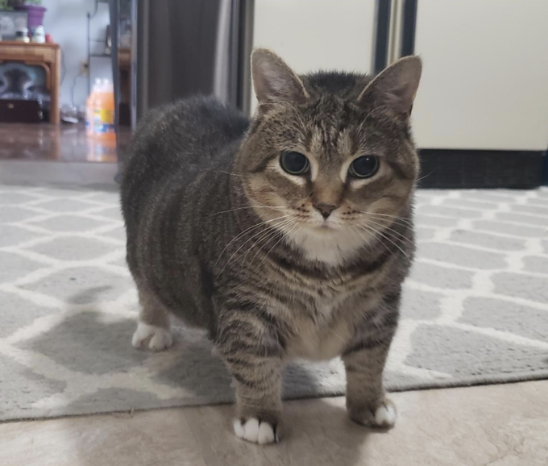

Про кота
- Цей кіт співає настільки натхненно, що навіть сусідська собака підспівує. Його «oo ee a e a» звучить краще за половину попсових хітів у чартах.
- Він довів, що коти — універсальні артисти: спершу вони крадуть ковбасу, а потім твоє серце, а тепер ще й тренди в TikTok.
- Кажуть, що після прослуховування його пісні рівень щастя піднімається на 200%, а рівень серйозності в житті падає до нуля.
- Якщо ти шукаєш ідеальний спосіб підняти настрій друзям — просто увімкни цього кота. Бо де ще ти побачиш кота, який робить конкуренцію Shazam?
Хто такий кремезний сірий кіт, який з'являється в реміксах «Oo Ee A E A»?
Згідно з листуванням із Know Your Meme, кішка, зображена в реміксі «Oo EE A E A», — це врятована кішка на ім'я Етель. За словами власника Етель, зображення кішки з короткими лапками вперше було опубліковано в групі Facebook «Cats On Catnip Group» у січні 2019 року, після чого його підхопили латиноамериканські творці мемів під назвою «Ai Dise Gratis».

Як «Oo Ee A E A» стало асоціюватися з обертовим сірим котом?
- Хоча вже існує мем «Obertying Cat» із чорно-білим котом на ім'я Максвелл, сірий кіт став ремікс-мемом лише після того, як у 2023 році низка китайських інтернет-користувачів почала поєднувати фотографії Етель із звуком «Oo Ee A E A».
- 12 квітня 2023 року користувач Bilibili 黑瘦的鱼头 завантажив ремікс звукового ефекту «Oo Ee A E A» з редагованим відео обертового кота. Відео набрало мільйони переглядів і пізніше було перепубліковано на YouTube в 2023 році користувачем Sillius The Third.